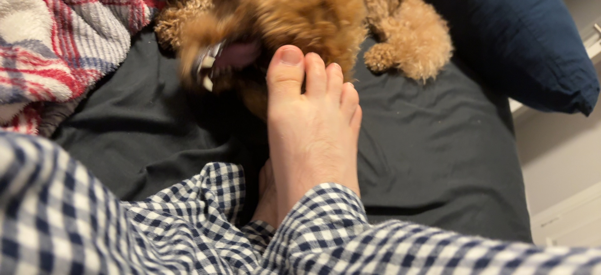
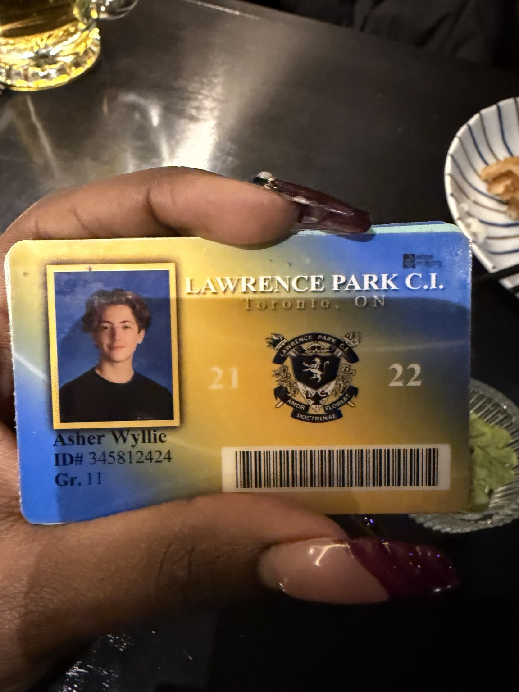
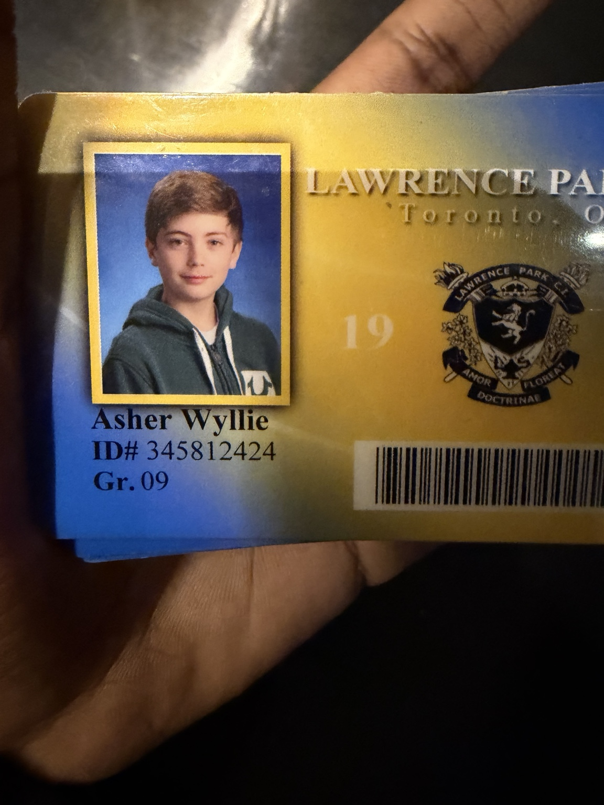
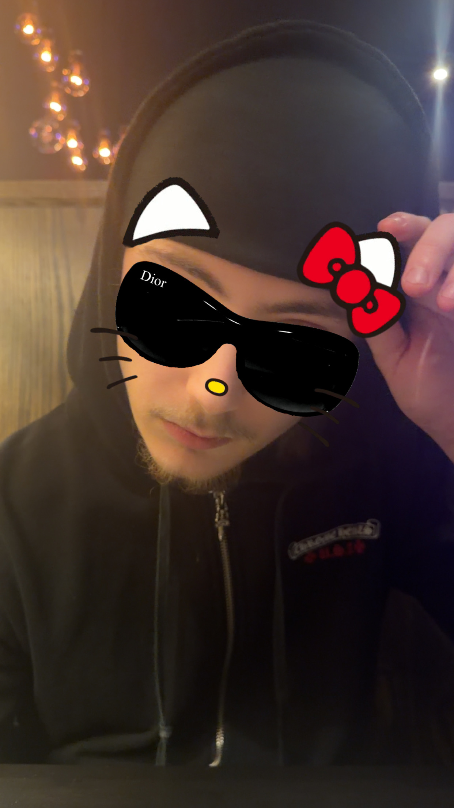
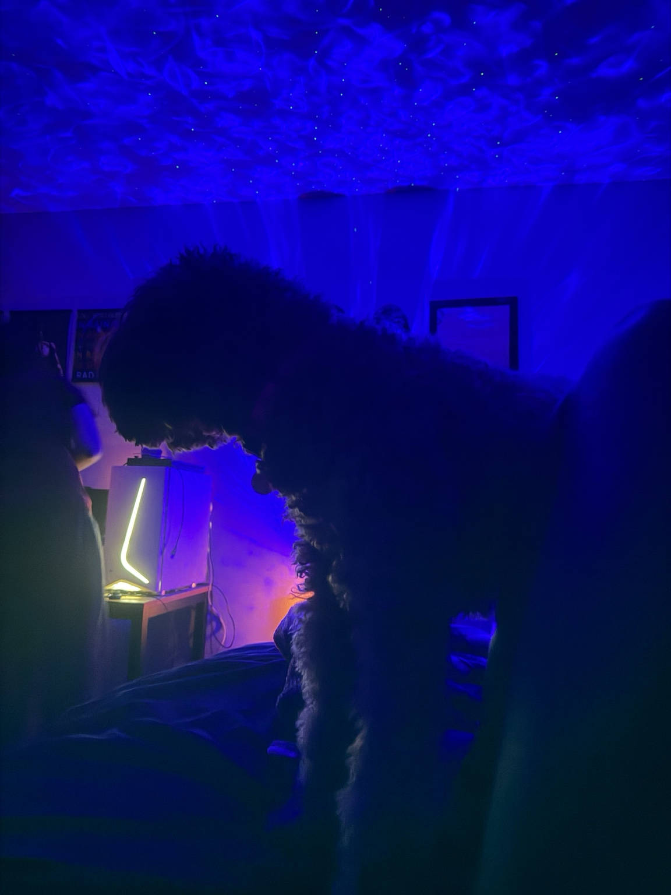
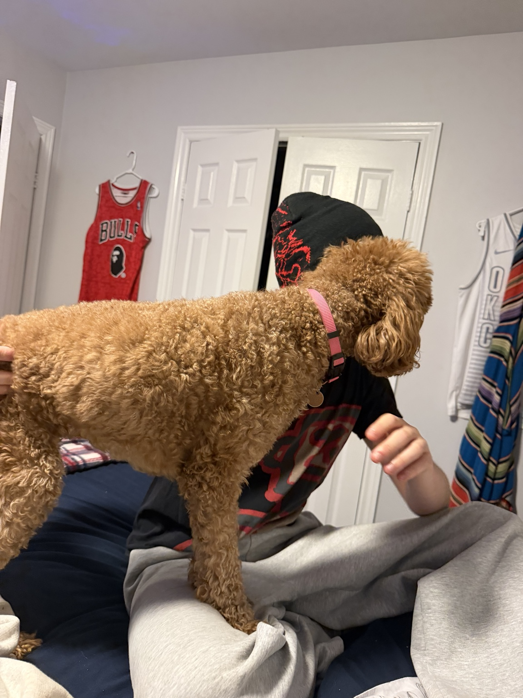
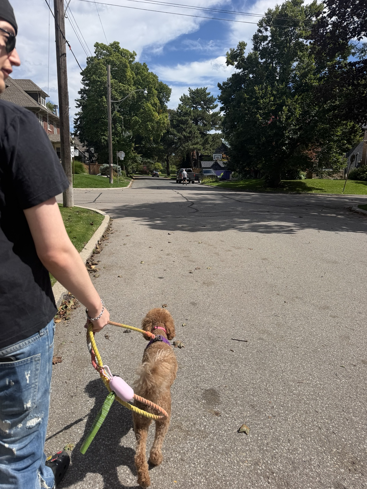

A little music, a little film, and all the things I probably don't say enough.
21
PRODBYASH · SIDE 21
PRODBYASH — SIDE 210:00 / 3:18
TRACK 01 · REWIND
I never believed in Hinge stories.
Which makes it very funny that ours started there.
The match.
For the first few weeks, I was barely responsive. You kept trying anyway. Somewhere between talking about music and realizing we were both going to see OsamaSon, I started paying attention. Having the same music taste was one of the first things that drew me to you.
Sake Bar Kushi.
You showed up in that American-flag Chrome Hearts hoodie that I thought was ridiculously cool. Then you showed me your middle-school ID cards, which somehow might have been even cuter.

proof that you've always been cute ♡
Wrong timing.
We wanted different things, and eventually we went our separate ways.
After we stopped talking, I still went back there sometimes hoping I'd run into you.
Play it again.
And somehow, we found our way back to each other. This time it felt easier. More honest. More like something I wasn't ready to lose again.
TRACK 02 · A DAY I KEEP
Chocolate-chip pancakes.
One of my favourite days with you was honestly such a simple one. We went to that real old-school diner — exactly the kind I'd always wanted to go to — and I had the best chocolate-chip pancakes.
Then we wandered through the thrift stores in Kensington and ended up getting pizza and pasta at Fresca, one of my favourite places.
Nothing huge happened. I just remember being really happy that it was you I was doing all of it with.


TRACK 03 · THE ASHER ARCHIVES
Things I want to keep.
35MM · PRIVATE ARCHIVE

archive 01

archive 02 ♡

archive 03

unfortunately, I love this too.
TRACK 04 · PRODUCED BY ASHER
I love watching you create.
I love how passionate you are about music. I love hearing you explain what you're doing, watching a beat go from nothing to something, and seeing how much of yourself you put into it.
One of my favourite parts of loving you is getting to learn the world through the things you love.
TRACK 05 · 21 THINGS
Little things about you.
TAP TO DEVELOP
There are a lot of little things I love about you.
TRACK 06 · ORDINARY THINGS
The parts I look forward to.
tap a memory
ROLL 002 · STILL TO BE DEVELOPED
For the pictures we haven't taken yet.
BONUS TRACK · FOR ASHER
One last thing.
Asher,
I don't think I tell you enough how genuinely grateful I am to have you in my life. Meeting you was one of the best things that happened to me last year, even if it took us a slightly complicated route to get here.
I'm always excited to spend time with you. Whether we're actually going somewhere, walking Bodhi, watching a movie, listening to you make music, or just sitting on the phone doing absolutely nothing, I feel comfortable with you in a way that means a lot to me.
You're one of the best friends I've had in a long time. I love that I can be emotional with you and you never make me feel like I'm too much. You're so gentle and patient with me. Every time you wipe my tears or call me sweetheart or just sit there with me until I'm okay, it warms my heart more than you probably realize.
I love your pretty green-blue eyes and your dimples. I love your style. I love your passion for music. I love listening to you teach me things. I love your random bathtub selfies. I even secretly love when you insist on cracking my fingers and toes after I tell you not to.
And somehow you've even infected my vocabulary, because now I say “valid” and “super valid” all the time — although I'm still convinced you're being passive aggressive when you say it.
I love that whatever this is between us can be soft and serious and then five minutes later you're trying to fart on me. I wouldn't trade that ridiculousness for anything.
Most of all, I don't want to imagine a version of my life where I can't just call you whenever I want, hear your voice, and immediately feel a little more at peace.
I'm really grateful we found our way back to each other. I hope 21 is a year where you get closer to everything you're working toward, make music you're proud of, find new things to obsess over, and feel very, very loved while you're doing it.